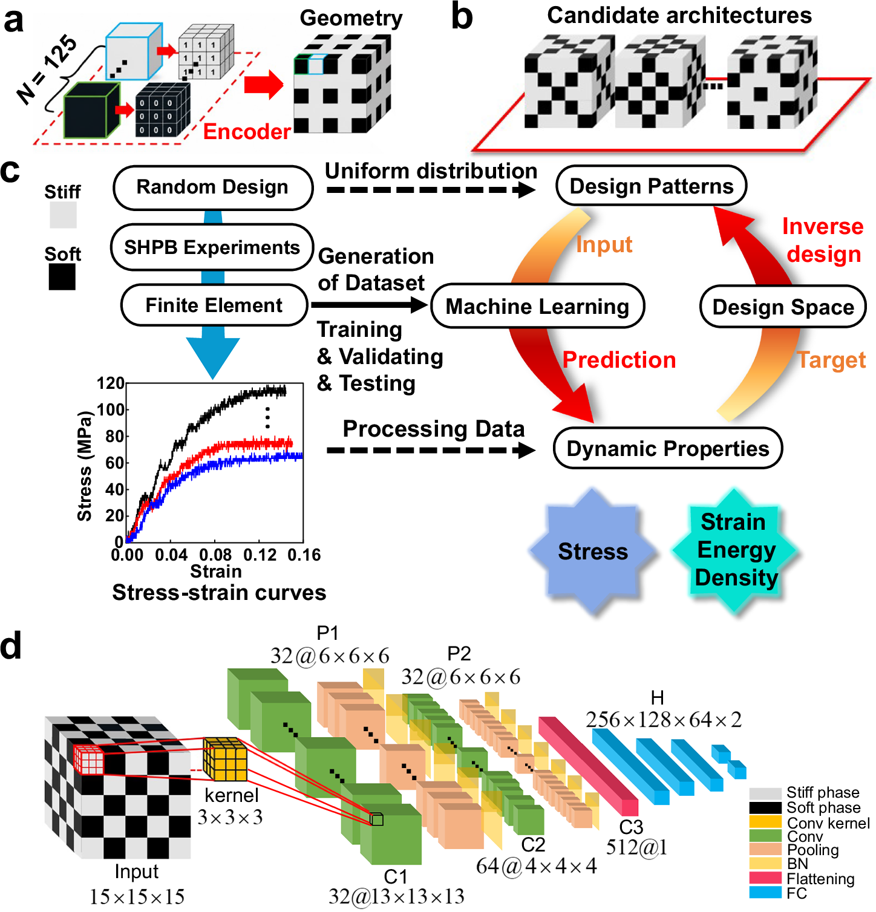

摘要解读
机器学习驱动的三维双相复合材料抗高速冲击性能优化
Machine learning-driven optimization of high-velocity impact resistance for three-dimensional biphasic composites
解读更新 2026-09-25 10:23 · 依据公开摘要整理，未核验全文细节
摘要解读已完成，图文文章正在升级。以下保留现有摘要笔记，尚未按图文稿逐项复核。
本文关注三维双相复合材料的抗高速冲击性能优化。摘要称，机器学习通过三维卷积代理模型开展力学复合结构逆向设计，并结合实验与有限元验证动态响应。[摘要] 解读：其阅读价值在于连接结构设计、代理建模与动态验证，而非摘要已证明某种性能优势。现有资料未披露模型输入输出、优化算法、样本规模、对照结果及误差，因此只能作摘要级导读，不能确认性能提升幅度或工程适用边界。
研究问题
题名将对象限定为三维双相复合材料及其抗高速冲击性能；摘要则明确涉及“inverse design of mechanical composite structures”。[摘要] 解读：核心问题是如何面向目标力学响应寻找结构，但具体设计变量、冲击条件与目标函数均未交代。
方法与路线
摘要给出的方法核心是“three-dimensional convolutional surrogate”，用于力学复合结构逆向设计，并提及实验和有限元验证动态响应。[摘要] 解读：可确认代理建模与物理验证同时出现，但不能确定模型架构、训练流程及逆向搜索机制。
创新与比较
摘要将机器学习、三维卷积代理与结构逆向设计放在同一研究框架中。[摘要] 解读：值得关注的是三维结构表征与设计任务如何结合，而不是据此认定网络或优化算法具有原创性。资料没有相关工作比较、消融分析或明确创新声明，创新程度仍待核查。
证据与发现
摘要仅报告存在“experimental and finite-element validation of dynamic response”，没有提供验证结果的数值或趋势。[摘要] 因此可确认作者设置了动态响应验证，但不能断言预测与实验高度一致，也不能声称抗冲击性能优于基准结构。
局限与边界
当前限制首先来自摘要信息量，而非已证实的研究缺陷：其未报告数据来源、样本规模、误差、比较基准和适用范围。[摘要] 解读：这些缺失使读者无法评估泛化能力与优化收益，但不能将未披露的信息直接等同于作者没有开展相应工作。
方向关联
解读：摘要中的结构逆向设计与生成式设计标签直接相关，也可为动态载荷下的结构设计研究提供方法线索。[摘要] 与可靠性研究的联系尚属潜在拓展，因为资料未涉及失效概率或不确定性；与智能运维的联系更间接，不能称其已实现监测或维护决策。
后续研究建议
建议：后续获取正文时，优先核对设计空间、目标函数、代理误差，以及实验和有限元验证是否覆盖优化后的结构。[摘要] 若考虑迁移至可靠性研究，可另行研究材料波动与冲击条件不确定性的影响；这属于研究建议，不是摘要报告的作者结论。
阅读建议
建议优先核查三维卷积代理模型如何服务逆向设计，以及实验与有限元如何验证动态响应；这些内容与生成式结构设计相关，但摘要尚不足以证明优化效果或方法领先性。[摘要]
原图未改动。以下图注来自标注的来源，不据此补写摘要未报告的实验结论。
已取得的论文原图


查看公开摘要
Machine learning uses a three-dimensional convolutional surrogate for inverse design of mechanical composite structures, with experimental and finite-element validation of dynamic response.